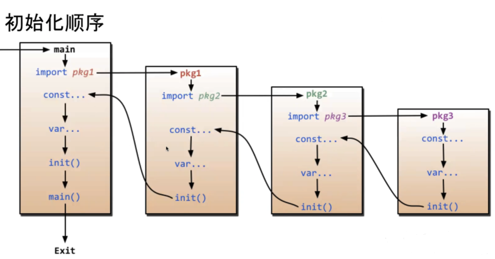

Go：init 与 defer 执行顺序
init函数
init()函数是一个特殊的函数，存在以下特性：
- 不能被其他函数调用，而是在main函数执行之前，自动被调用
- init函数不能作为参数传入
- 不能有传入参数和返回值
一个go文件可以有多个init函数，谁在前面谁就先执行
Go复制代码
package main
import "fmt"
func init() {
fmt.Println("init1")
}
func init() {
fmt.Println("init2")
}
func init() {
fmt.Println("init3")
}
func main() {
fmt.Println("main")
}
执行顺序
Go复制代码
init1
init2
init3
main

defer函数
只是一个顺序调用的 函数
你的期望 | 实际行为 |
能自动关闭文件 | ❌ 需要你写 |
能自动释放锁 | ❌ 需要你写 |
能自动删除临时文件 | ❌ 需要你写 |
能自动回收内存 | ❌ 那是 GC 的事 |
defer= 延迟执行 + 自动调用
清理逻辑 = 你自己写的函数
虽然在return 之前执行 但还是 需要实现 其内部需要实现 的变量
- 关键字 defer 用于注册延迟调用
- 这些调用直到 return 前才被执。因此，可以用来做资源清理
- 多个defer语句，按先进后出的方式执行，谁离return近谁先执行
- defer语句中的变量，在defer声明时就决定了
Go复制代码
package main
import "fmt"
func Func() {
defer fmt.Println("defer2")
fmt.Println("func")
defer fmt.Println("defer1")
}
func main() {
defer fmt.Println("defer4")
Func()
defer fmt.Println("defer3")
}
执行顺序
Go复制代码
func
defer1
defer2
defer3
defer4
参考文档
init函数 https://blog.csdn.net/bestzy6/article/details/122503275
defer函数 https://blog.csdn.net/m0_52896752/article/details/130191669